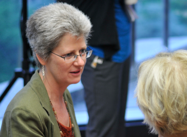
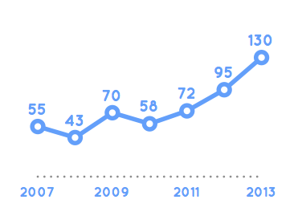

The Evolution of KDMD
On the KDMD project, we know that knowledge management isn't a static set of best practices: it's an evolving ecosystem that requires continuous focus. That's why as our project has grown, we have adapted to support the individual needs multiple buy-ins while also maintaining similar features across all of out sites. This is dummy text btw, so don't take it seriously.

USAID's Stacey Young discusses
Why KDMD Was Created
Watch the video now ›

See how our staff has grown
Our Staff Levels by Quarter
Explore the graph ›
Top Partners
- Engility
- Zaloni
- Obama
- Hillary